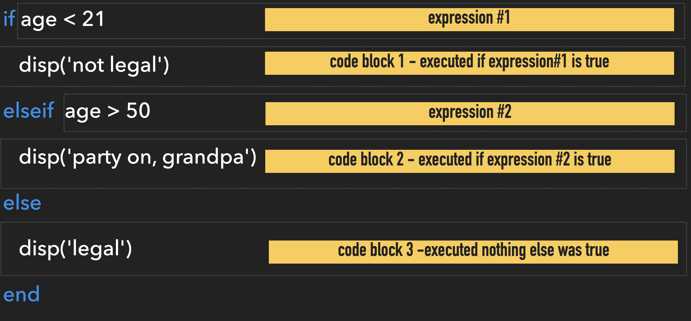

Control Flow
for Making Decisions or Repeating Stuff
Overview
If, then, else, when?
Control flow is the flow chart of computer programming. Control Flow allow you to create scripts or functions that execute or repeat upon meeting certain conditions. Think of a music player. When you click "Play", the Music plays. That is a type of control flow known as a "conditional statement." Similarly, when you select the "Repeat" function, the same song will play over and over. That is another type of control flow called a loop. We'll talk about that too.
Somewhat Useful MATLAB Documentation
Keywords you should know
Terminology you should know
-
Control Flow: the process of creating conditional statements or looping statements.
-
Conditional Statement: A statement used determine which block of code to execute at run time
-
Looping Statement: A statement designed to repeatedly execute a block of code
Conditional Statements

When programming, you often want the computer to respond differently depending on the input. Conditional statements are like programmatic flow charts that analyze values of specified variables to determine which block of code should be executed. This is useful for handling unknown situations.
A conditional statement typically contains a series of expressions that resolve to either true or false. Each expression is followed by the block of code to be executed if the expression resolves to TRUE. So, for conditional statements to properly work, only ONE expression should resolve to TRUE on a given run of the statement.
IF ELSE statements
IF, ELSE statements are the simplest and most straight forward of the conditional statements. They are used to create programmatic flow charts.
Anatomy of an IF ELSE STATEMENT
This is what an IF ELSE statement looks like:
if expression 1
CODE BLOCK 1
elseif expression 2
CODE BLOCK 2
else
CODE BLOCK 3
end
- Required keywords:
ifandend. - Optional keywords:
elseandelseif.elsemust be the last keyword beforeend/ - Expression: a statement that can resolve to a
0or non-zero (e.g. a logical operation). Expressions immediately follow the keywordsifandelseif.elseandenddo not have expressions. - Code block: the line(s) of code that follow a key word line (except
end). The code that is run if the immediately preceding expression resolves to a non-zero value. If none of the expressions resolve to a non-zero value, then the code block after theelseline is run. - Evaluation order: each expression is evaluated sequentially starting from the
ifline. Once an expression resolves to a non-zero value, the subsequent code block is executed and the IF ELSE statement is exited (no other expression is even checked)
Consider the following example:

- NOTE: the variable
ageshould be set before the IF ELSE statement - Code Block 1 will only execute if the value of
ageis less than 21 - Code Block 2 will execute if
ageis greater than 50 - Otherwise, Code Block 3 will execute (for any age between 21 and 50)
Challenge 1: The case of the missing else
IF ELSE statements don't actually require an else statement
Here, we have a statement that checks whether the variable RESPONSE contains the string "Here". (like a simplistic Taking Attendance Algorithm).(1)
- Not shown here is the assignment of a value to
RESPONSE, which typically occurs before the IF ELSE statement.
If RESPONSE does contain "Here", then variable student gets assigned the value "present". If not, nothing happens.
CHALLENGE: add an else statement so that if RESPONSE contains anything other than "Here", student is set to "absent".
Challenge 2: When Present is not Here
In the previous challenge, we only test if RESPONSE is equal to "Here". This works great, if the response from the student is exactly "Here". But what if the student is not an automaton and responds with an alternate response, like "Yup", "Yo", or even "present"? The conditional statement would return a FALSE and the student would be marked absent.
Perhaps it would be more accurate to only mark the student "absent" if there is no response (Bueller? Bueller? Bueller?) and "present" if there is any response at all.
How would you modify the above IF ELSE statement so that when RESULT is set to "", student is set to "absent", and when RESULT has any other value, student is set to "present"?
Organizing Multiple ELSE IFs
It is important to remember that in an IF ELSE statement, each expression is evaluated sequentially. Once an expression evaluates to TRUE (or a non-zero number), all subsequent expressions are ignored. So, when you are creating an IF ELSE statement, it is critical to think about the order of the expressions to make sure each expression gets it's fair shake.
The following example contains multiple expressions to test the property of a number stored in x. Here we make extensive use the mod function, which returns the remainder after division (modulo operation). This is a very useful function to help identify even or odd numbers , or even perfect squares and powers of two (1).
- For example,
mod(x,2)returns the remainder after dividing by 2. So, this expression returns a1ifxis odd, and a0ifxis even. Similarly,mod(x,1)is useful for identifying whole numbers. In this case, it returns a 0 ifxis a whole number, and a fractional number otherwise. Remember, expressions in IF ELSE must resolve to zero or a non-zero number.
Here is some terminology and facts to recall as you review the following code:
- Prime Number: a number divisible only by itself and 1.
1is not a prime number, but2is. The rest of the prime numbers are odd numbers. - Perfect square: a number that when you take the square root, you get a whole number. e.g. \(\sqrt 4 = 2\), so
4is a perfect square. - Power of 2: a number in the form \(2^n\). e.g. \(2^3=8\) so
8is a power of 2.
- The function isprime tests whether the number is prime.
~mod(sqrt(x),1)- A perfect square should be a whole number after taking the square root. So, in this syntax, we take the square root of the inputted number, x, and then ask if there is any remainder after dividing by 1. If the square root is not a whole number (like1.4142), then we would get a remainder (like0.4142). Whole numbers will return a zero after division by 1 (no remainder). So, we apply a logical NOT (~) to the output to make this expression resolve to true when we do get a whole number.~mod(log2(x),1)- A number that is a power of 2 should return a whole number when plugged intolog2.mod(x,1)returns 0 for whole numbers, so we apply a logical NOT to the output.
So, for the value 19, the isprime(x) expression would resolve to true, and str would be set to 'a prime number' because 19 is a prime number. No other expressions would be tested.
For the value 9, the first expression would resolve to FALSE (9 is not prime), but the second expression would resolve to TRUE, and str would be set to 'a perfect square` (1). The third expression would be ignored.
9is of course a perfect square:3 x 3
Challenge: The trouble with 16
Is 16 a perfect square? (1)
- Yes. \(4 * 4=16\)
Is 16 a power of 2? (1)
- Yes. \(2^4=16\)
So, what is str set to after running the above IF ELSE statement?
Even though 16 is both a Perfect Square and a Power of 2, str will be set to 'a perfect square' since that is the first expression encountered that resolves to true. The third expression testing for Powers of 2 will be ignored in this case.
Challenge: Odds or Evens
Review the IF ELSE Statement above and add the following functionality:
- Reports if the Number is 'odd, but not prime or a perfect square'
- Reports if the number is even
Remember that mod(x,2) returns a 1 if the number is odd.
if isprime(x) % tests whether a number is prime
str = 'a prime number';
elseif ~mod(sqrt(x),1) % tests for perfect squares
str = 'a perfect square';
elseif ~mod(log2(x),1) % tests for powers of2
str = 'a power of 2!';
elseif mod(x,2) % tests for odd numbers
str = 'odd';
else % assumes number is even
str = 'even';
end
fprintf('%d is %s\n', x, str) % fprintf outputs directly to the command window
- Notice the expression to test for 'odd' is after the other expressions. So this will only be reported once testing for the other properties have been exhausted. Remember,
1is a power of 2 — \(2^0=1\). - Note that we don't have to test whether the number is even. We just assume once all of the other expressions resolve to false, that the number is even, so we place that after the
elsekeyword.
SWITCH CASE
You use SWITCH, CASE statmements when you just want to match the variable contents to a specific value, like 'red'. In fact, SWITCH, CASE statements are best used when you have an exact value you want matched, such as a word or a number.
Anatomy of a SWITCH CASE statement
SWITCH CASE statements use the switch and case key words. These Conditional Statements execute depending on the value of the indicated variable. If the value in variable matches the value in one of the CASE lines, then corresponding block of code is executed. If there are multiple matches, only the first match is executed. If there is no match, the code block following the otherwise keyword is executed. The otherwise keyword is optional, and if not included, and there is not match, the SWITCH CASE statement simply exits and runs no code blocks.
switch variable
case value 1
CODE BLOCK 1
case value 2
CODE BLOCK 2
case value 3
CODE BLOCK 3
otherwise
CODE BLOCK 4
end
-
The variable is indicated immediately after the
switchkeyword. This tells the statement to inspect the contents of variable. -
The potential values are listed after each
casekeyword. - If the value matches the content of the variable, the block of code immediately following the value is executed.
- Only one CODE BLOCK is executed per run.
Consider the following example
| Example: Switch, Case | |
|---|---|
Since the variable x was assigned the character array 'red', before the SWITCH CASE statement, only the code on line 5 will run: Roses are red'). If you change x to 'green', 'blue', or 7, then that corresponding line of code will run (lines 7 and 11, respectively). If you change x to anything else, like 'moon' or 4, then the otherwise code block display('try again') will run (line 13). IMMPORTANT: SWITCH CASE statements are case-sensitive. So, you if you change x to 'Red', the otherwise code block will execute.
Challenge: You're on the case
Add two additional cases to the SWITCH CASE statement that do the following
- For 'magenta', set the variable
strto 'Magenta is Magnificent' - For either 'orange' or 'yellow' (case statements can be cell arrays to indicate multiple options), set
strto 'Orange you glad you chose yellow (or orange)'
Additional Changes:
- Remove the case for 7
- Use the function
inputdlgto request a string from the user. Assign the output from the function tox - Use the function
loweronxso all characters in the string are lowercase.
Here we use inputdlg to request a string from the user. Notice that we enter a prompt string to tel the user what to enter: Enter a color.
inputdlg returns a cell array, so we need to extract the contents of the cell using the curly brackets: x{:}. The contents from the x are then run through lower to change all characters to lowercase. Since inputdlg captures string arrays by default, we needed to remove the case for 7. If we wanted to have cases for numbers, we would need more complicated syntax, and we don't want that.
For Orange or Yellow, we use a cell array for the case value: {'orange' 'yellow'}. This case will run for either 'orange' or 'yellow'.
Finally the function fprintf displays the string in the command window. We could have just as easily used display: disp(str)
Loops
Looping Statements are used to repeatedly execute the same code block over and over while modifying the values of certain variables. Computers are really good at repeating tasks over and over, sometimes to a fault.
FOR LOOPS
FOR LOOPS are used to repeatedly execute a CODE BLOCK for a predetermined number of times.
Anatomy of a FOR LOOP
A FOR LOOP statement is bracketed by the for and end keywords. In between is the block of code that is run repeatedly.
for index = values
CODE BLOCK
end
- Notice immediately following the the
forkeyword is an initializing statement that resembles a variable assignment - This initializing statement determines how many times the LOOP will run
- The number of times that the loop will run equals the number of columns in values.
- On each iteration of the loop, the index will pull a value from a subsequent column in values. So, index will have a different value on each iteration.
For example, consider the following:
These 3 lines set up the entire for loop statement.
- Line 1 contains the the initializing statement (right after the
forkeyword). This initializing statement creates a horizontal vectoricontaining the integers 1 through 10. Since there are 10 horizontal elements, the FOR LOOP will run 10 times. - Line 2 contains the executed line of code:
fprintf('The value of i is %d',n) - In Line 2, the variable
irefers to current element in the vector set-up in in the initializing statement. So, on the first loop,iequals 1. On the second loop,iequals 2, etc.
After the above FOR LOOP is complete, you should see the following output in the command window:
The value of i is 1
The value of i is 2
The value of i is 3
The value of i is 4
The value of i is 5
The value of i is 6
The value of i is 7
The value of i is 8
The value of i is 9
The value of i is 10
...This output is the result of executing the fprintf function over and over again while only changing the value of i on each iteration.
Important Notes About For Loops
-
FOR LOOPS will loop the number of times equal to the number of columns in the array of the initializing statement (not the maximum value in the array)
-
You can use any variable name in the initializing statement (n and i are popular variable names for FOR LOOPS), or you could even use a vector array that has already been created
-
The FOR LOOP initializing array does not have to start with the value 1
Challenge - For Loop
How many times will the following FOR LOOP loop?
- Also, what will be displayed in the command window after execution of the FOR LOOP is complete?
Preallocation
FOR LOOPS are often used to fill arrays in some sequential fashion, such as element-by-element or row-by-row. When doing this, you should always preallocate the array, meaning that you should create an empty array that already contains the number of elements that you want to end up with. Then, during the execution of the loop, you simply fill each element of the array with the data that you want. If you know how big your final array is going to be, preallocation is easily accomplished using the function zeros, which creates an array filled with zeros. If you don't preallocate, MATLAB has to create a copy of the variable on each iteration of the loop which takes more time and uses more memory.
For example, the following creates an array i with 10 zeros
You can fill the elements of i using a FOR LOOP as follows:
On each iteration of the loop, you fill one element and get an output that looks like the following
i =
10 0 0 0 0 0 0 0 0 0 % iteration 1
i =
10 20 0 0 0 0 0 0 0 0 % iteration 2
i =
10 20 30 0 0 0 0 0 0 0 % iteration 3
i =
10 20 30 40 0 0 0 0 0 0 % iteration 4
i =
10 20 30 40 50 0 0 0 0 0 % iteration 5
i =
10 20 30 40 50 60 0 0 0 0 % iteration 6
i =
10 20 30 40 50 60 70 0 0 0 % iteration 7
i =
10 20 30 40 50 60 70 80 0 0 % iteration 8
i =
10 20 30 40 50 60 70 80 90 0 % iteration 9
i =
10 20 30 40 50 60 70 80 90 100 % iteration 10
…As you can see in the Command Window output, each run of the FOR LOOP adds a multiple of n into the nth element of i. Notice how the zeros are being replaced with the data.
Vectorization
The term vectorization refers to the creation an array simply by using the MATLAB syntax of array creation (without the use of a FOR LOOP). Indeed, it is often possible to create an array without needing a FOR LOOP in MATLAB. This is known as vectorizing a FOR LOOP. You should always try to vectorize your code whenever possible as the vectorized form of the code can run faster than the FOR LOOP form.
For example,
…accomplishes the same thing as the previous loop, but uses only one line of code and no looping.
Combining Conditional Statements and FOR LOOPS
Control Flow statements are often used in combination. Consider the following:
| a FOR LOOP containing an IF ELSE statement | |
|---|---|
…This FOR LOOP runs 10 times. On each iteration, the IF, ELSE conditional statement checks whether the current value of x is odd or even and sets the value of eo accordingly. The function fprint prints the result to the command window as follows
The number 1 is odd
The number 2 is even
The number 3 is odd
The number 4 is even
The number 5 is odd
The number 6 is even
The number 7 is odd
The number 8 is even
The number 9 is odd
The number 10 is even
WHILE LOOPS
WHILE LOOPS are used to repeatedly execute a block of code until a condition is met.
Anatomy of a WHILE LOOP
WHILE LOOPS are bracketed by the while and end keywords. The while keyword is followed by an expression that resolves to true or false
while expression
CODE BLOCK
end
WHILE LOOPs loop indefinitely until the expression resolves to false. On each iteration of the WHILE LOOP, the expression is evaluated. If the expression evaluates to true, then the looping continues. So, the variable being evaluated in the expression must change in the block of code for the looping to ever stop. This also means that if you are not careful with your code and the expression never resolves to false, the WHILE LOOP will NEVER STOP LOOPING!
Breaking out of Stuck WHILE LOOPS
Sometimes while loops can be trapped in an unbreakable loop (usually due to shoddy programming). To force a break out from a while loop, enter Ctrl-C.
Consider the following:
This loop simply displays the value of n each time the loop iterates. And then increments the value of n by 1. Notice that the code inside the loop does not execute once the value of n reaches 10. Once n=10, the expression n<10 resolves to FALSE and the loop stops executing (and doesn't execute the code after the WHILE line).
Challenge - While LOOP 1
So, why bother with WHILE loops? The code above could easily be accomplished using a FOR LOOP. The main reason that you use a WHILE is for situations when you don't know beforehand when the repeating code should stop executing.
Consider the following code which the simulates the sequential rolling of a die until a 5 is rolled
| Example: WHILE LOOP | |
|---|---|
When you are rolling an actual die, there is no way to guess when you are going to roll a 5. You just have to roll until you get a 5.
In this example, we use the function randi to randomly return an integer between 1 and 6. Each time the WHILE LOOP iterates, randi returns a different integer. The WHILE LOOP will continue to iterate until die is randomly set to the value 5.
Here is the output I got the last time that I ran the code:
You rolled a 1. Try again.
You rolled a 1. Try again.
You rolled a 2. Try again.
You rolled a 1. Try again.
You rolled a 1. Try again.
You rolled a 5. Nice Job!
Notice that I needed two calls for fprint: one for inside the LOOP to report the current value of die, prior to changing its value, and one outside of the LOOP to report the final value of the die.
If you run this code in MATLAB, you will very likely get a different output. Try it now!
Challenge - While LOOP 2
What would you change in the code above so that the WHILE LOOP stops iterating after "rolling" a 3 instead of a 5?
You would Change the conditional expression to:
while die ~=3
as follows
A More Advanced WHILE LOOP Example
Warning. This example involves math.
To further explore WHILE LOOPS, let's consider the following the illuminating example:
You receive an allowance of
$20per week,$6of which you immediately spend on candy and soda. This is a non-negotiable expense. Recently, all your friends got hoverboards, and you want one too. But hoverboards currently cost$100, and you only have$20in your bank account. Worse, due to the surge in popularity, hoverboard prices have been steadily increasing in price by roughly3%each week. You want to know how many weeks it will take to save up for a hoverboard, assuming your allowance and candy and soda expenses remain constant.
Manually, you could solve this problem by calculating your weekly net income ($14), adding that amount to your bank account, and then comparing the amount in your bank account to the current price of the hoverboard. Remember, the hoverboard price increases each week, so you will have to recalculate the current price of the hoverboard. If your bank account is less than the amount of the hoverboard, then you recalculate the bank balance and hoverboard price until you have more money in your bank account than the updated price of the hoverboard. To determine how long this will take, you count the number of times you had to repeat the recalculation process (saved), which is equivalent to the number of weeks until you're cruising on your sweet, sweet hoverboard.
A WHILE LOOP can automate the recalculation process as follows:
…Prior to the start of the loop, we preallocate several variables that will be used inside the loop.
bank_account: keeps track of your current bank balance, starts at $20hoverboard: keeps track of the increasing price of hoverboards, starts at $100candy_soda_expense: your weekly expense, $6 on candy and sodaallowance: your weekly income, $20/weekweek: a variable used to track the number of weeks.
At the start of the loop, the WHILE relative expresssion bank_account < hoverboard is evaluated. If bank_account is below hoverboard, the relative operation returns a TRUE, and the LOOP starts. Inside of the loop are the steps need to recalculate the balance in your bank account and the price of hoverboard. On each iteration of the loop, the value of bank_account and hoverboard are recalculated and week increases by 1. If, bank_account < hoverboard, then the WHILE loop continues to iterate. When bank_account < hoverboard is NOT TRUE, the WHILE LOOP code block is skipped and then the line after the WHILE LOOP executes (the line with the function fprint), which prints the results to the command window.
And as we can see below, the result is:
The number of weeks to save up for a hoverboard is 8.
At this time, the price of the hoverboard will be 126.68
and you will have 132.00 in your bank account.
Challenge - WHILE LOOPS 3
How many weeks would it take if:
- you eliminate your Candy and Soda expense? (and everything else was at the original setting)?
- You allowance was only $15?
- The starting price of a Hoverboard was $150?
- You already had $100 in your bank account?
…When answering the above questions, assume that all other variables are reverted back to their original defaults
How many weeks would it take if: (Remember, answer each question assuming all other variables are reverted back to their original defaults).
To answer these questions, you simply change the starting values of the variables prior to the start of the WHILE LOOP. Don't change anything inside the loop. Be sure to change all the variables back to the default values, before adjusting the value of any 1 variable.
- ...your Candy and Soda expense was $0 (and everything else was at the original setting)?
5 weeks
- ...your allowance was $15?
16 weeks
- ...hoverboards cost $150?
16 weeks
- ...your starting bank_account amount was $100
0 weeks. The WHILE LOOP doesn't even start because 100 is NOT less than 100.